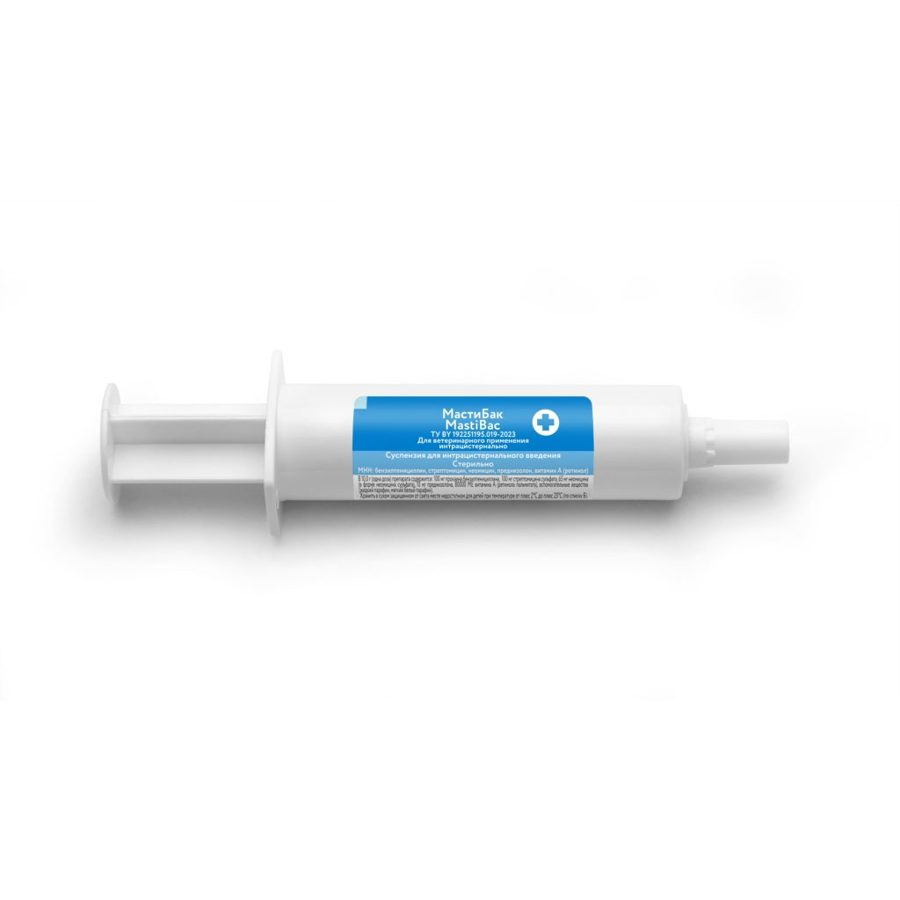
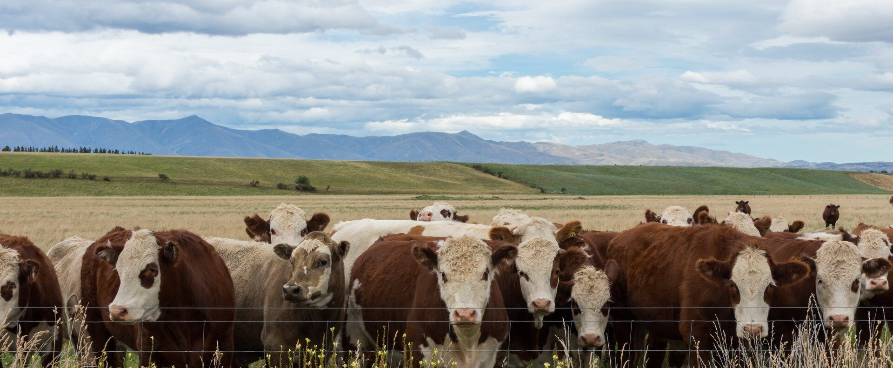

МастиБак
Препарат предназначен для лечения субклинического и клинического мастита у лактирующих коров.
+375 29 761-77-01 — отдел продаж РБ
| Прокаина бензилпенициллин | 100 мг |
| Стрептомицина сульфат | 100 мг |
| Неомицин (в форме неомицина сульфата) | 65 мг |
| Преднизолон | 10 мг |
| Витамин А (ретинола пальмитат) | 80 000 МЕ |
В 10,0 г (одна доза). Вспомогательные вещества: жидкий парафин, мягкий белый парафин.
Препарат предназначен для лечения коров, больных субклиническим и (или) клиническим маститом в период лактации.
Препарат применяют интрацистернально один раз в сутки в течение трех дней в дозе 10 г (содержимое одного шприца) на одну больную четверть вымени. Перед использованием шприц с препаратом рекомендуется тщательно встряхнуть и подогреть до температуры тела животного.
Препарат противопоказан животным с повышенной чувствительностью к компонентам препарата, заболеваниями почек и печени.
Другие интрацистернальные препараты

Запросите цену и наличие препаратов
Оставьте контакты — менеджер отдела продаж свяжется и сообщит цену и наличие. Или позвоните: +375 29 761-77-01 (РБ), +375 29 662-73-75 (РФ).